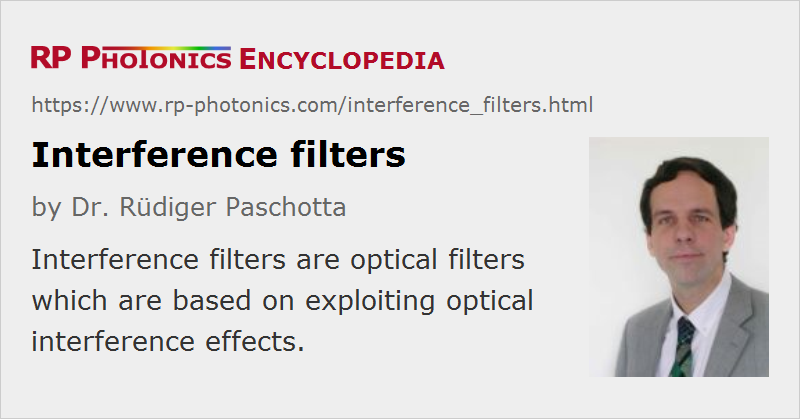

Interference Filters
Definition: optical filters based on interference effects
More general term: optical filters
German: Interferenzfilter
How to cite the article; suggest additional literature
Author: Dr. Rüdiger Paschotta
Interference filters are optical filters which are based on exploiting optical interference effects – in contrast to absorbing filters, which utilize wavelength-dependent absorption.
Most interference filters are dielectric multilayer mirrors, where the total reflected light arises from the interference of reflections at several or even many optical surfaces between different thin layers; the same holds for the transmitted light. See the article on dielectric mirrors for more details on fabrication and the operation principle.
There are also multilayer filters containing both dielectric and metal films. With that technology, one can work with fewer layers (e.g. just two metal films with a dielectric film in between), still obtaining substantial reflections, but the absorption losses are substantially higher than for purely dielectric mirrors.
Some interference filters exploit the principle of Fabry–Pérot interferometers. This is possible with monolithic dielectric or metal/dielectric mirror structures, but also with composite structures, involving two separate mirror devices, which are in most cases rigidly fixed to each other such that the spacing, which is essential for interference effect, is accurately maintained.
The function of an interference filter can be that of a bandpass filter, notch filter, high-pass or low-pass filter, for example, depending on the used design type. For example, Fabry–Pérot designs naturally lead to bandpass characteristics in transmission and notch filter characteristics in reflection. High- and low-pass filters can be designed as somewhat modified Bragg mirrors. The optimization of interference filter designs often involves numerical multilayer thin-film software.
See the article on optical filters for further details.
General Properties
Some general properties of interference filters are briefly summarized in the following:
- Through their design, one may realize a wide range of properties. As a substantial number of layer pairs are usually used, there are many degrees of freedom.
- In contrast to absorbing filters, interference filters can usually be operated with relatively high optical intensities without being damaged.
- There can be a significant temperature dependence on the detailed optical properties, since the temperature affects the refractive indices.
- Because longer propagation lengths provide larger phase differences even for small differences in optical wavelength, tentatively thicker devices are required for improved wavelength resolution. However, resonance effects can substantially improve resolution without using a large thickness.
- The filter characteristics substantially depend on the angle of incidence of the input light, because that influences the optical phase differences between reflections from different interfaces. Generally, larger angles of incidence lead to smaller phase differences, although the opposite may be expected [1]. As a result, spectral features tend to move to shorter wavelengths as the angle of incidence is increased (see Figure 1).
Suppliers
The RP Photonics Buyer's Guide contains 21 suppliers for interference filters. Among them:
Questions and Comments from Users
Here you can submit questions and comments. As far as they get accepted by the author, they will appear above this paragraph together with the author’s answer. The author will decide on acceptance based on certain criteria. Essentially, the issue must be of sufficiently broad interest.
Please do not enter personal data here; we would otherwise delete it soon. (See also our privacy declaration.) If you wish to receive personal feedback or consultancy from the author, please contact him e.g. via e-mail.
By submitting the information, you give your consent to the potential publication of your inputs on our website according to our rules. (If you later retract your consent, we will delete those inputs.) As your inputs are first reviewed by the author, they may be published with some delay.
Bibliography
| [1] | R. Paschotta, “Reflection spectrum of tilted dielectric mirror”, The Photonics Spotlight 2006-11-02 |
See also: interference, optical filters, dielectric mirrors, Fabry–Pérot interferometers
and other articles in the category general optics
|  |
If you like this page, please share the link with your friends and colleagues, e.g. via social media:
These sharing buttons are implemented in a privacy-friendly way!